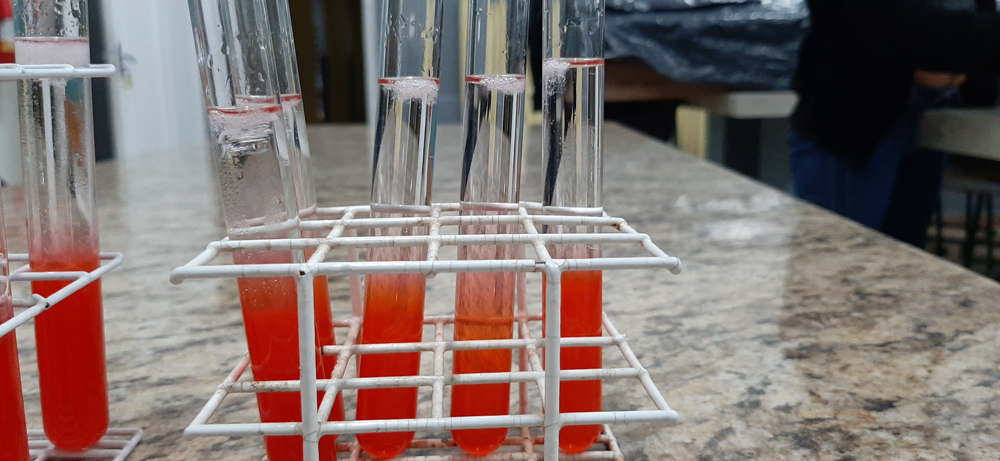

O DNA é a principal molécula do material genético, sendo responsável pelo armazenamento das informações genéticas de todos os seres vivos. Técnicamente é possível extrair o DNA de qualquer ser vivo, porém para esse experimento, utilizaremos o morango como modelo. O principal motivo para a escolha do morango é a facilidade em homogeneizar a fruta e acessar o seu material genético, além da sua cor chamativa e facilidade em obter amostras do organismo se somam a sua grande quantidade de material genético, facilitando a vizualização e o sucesso do experimento nas primeiras tentativas.
Materiais Necessários: 
- Saco Plástico Limpo - Morangos Maduros - Filtro de papel - Funil - Bécker - Tubo de Ensaio - Bastão de Vidro ou Palito de Madeira -Álcool Etilíco Gelado -Detergente Neutro Incolor -Sal de cozinha - Água
Método
1- Coloque o morango limpo e sem as sépalas dentro do saco plástico.
2- Esmague o morango com o punho, cuidando para não rasgar o saco plástico, por pelo menos 2 minutos.
3- reserve o morango esmagado.
4- Coloque os morangos esmagados em um bécker e misture com a soução de extração (veja como fazer abaixo). Misture por pelo menos 1 minuto.
5- Após passar 1 minuto, utilize o funil com o filtro de papel para filtrar essa mistura, adicionando-a no tubo de ensaio. Preencha o apenas 1/8 do tubo com essa solução.
6- Pegue o tubo com a solução filtrada e derrame o álcool gelado bem devagar através da borda, até completar a metade do tubo.
7- Observe o material que se forma onde se dividem as fases da mistura de morango com o álcool.
Preparando a Solução de Extração (suficiente para 100 baterias experimentais)
1- Misture em um bécker: 50 ml de detergente, 900 ml de água, 15g de sal de cozinha.
2- Misture com um bastão de vidro ou palito até ficar homogêneo.
3- Reserve essa solução.
Interpretando os resultados
Assim que comçar a derramar o álcool sob a solução de morangos, você irá notar que se formaram fibras brancas e logo acima uma espécie de halo branco bem fina. Esse camada fina, quase transparente, é o DNA dos morangos. A parte mais espessa que se parece com algodão é uma parte da pectina que está se desnaturando.
Para refletir
Porque utilizar o detergente na solução de extração?
R:O detergente irá atuar dissolvendo a bicamada lipídica presente nas membranas das organelas e membrana plasmática da célula.
Porque utilizar o sal na solução de extração?
R:O sal irá ajudar a diminuir a precipitação das proteínas dissolvidas no DNA, ajudando a conseguir vizualisar o DNA precipitado na solução.